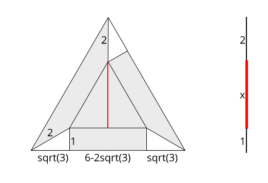

The English gibberish was from this fancy website, but I didn’t like the words they had. Do you understand? Listen to me. HELLO?! I hate you. Test edit.
# hello great humans!
Martin Luther really did not want a lot of change because he believed the revolting peasants were sinning and said the Pope was power hungry. For example, Luther wrote that the peasants were sinning by disobeying their masters, killing and robbing people, and separating from the Church (Doc E). He believed peasants were supposed to be obedient and nonviolent. Since he believed so, he did not intend to cause the kind of violence he witnessed when he wrote the 95 Theses, so the reform he aimed for was likely supposed to be peaceful and simple. http://www.example.com or http://www.example.com and sometimes example.com
The best animals are:
- sheep
best colors:
-
red
-
yellow
-
cyan
-
penguins
-
cats
- preferred over dogs
# I will probably only use h1-h3
In addition, Luther, in private, said that the Pope took full control over the Church, when it should have been Christ’s, and disapproved of anyone who he could not control (Doc B). The Pope was power hungry and abused his power of the Church. Luther only wanted the Pope and his Church to change, which didn’t require violent rebellion. Since Luther did not support the peasant revolution but thought the Pope was abusing his power, he did not expect a large reformation.
Do you know how to git push? Me neither.
random <b>wow</b>
const obj = {
get javascriptRoulette() {
if (Math.floor(Math.random() * 2)) return 4;
else throw new Error(4);
}
};
console.log(obj.javascriptRoulette);
# see?
After a long period of trading with Africans along the west coast, Europe suddenly decided they wanted to take all of Africa, and they did. During the 1800s, countries in Europe decided to claim and occupy as much as they could of the African continent. What motivated Europeans to imperialize Africa? Imperialism is a system of taking and controlling one’s land by force. Demand for more land was the driving force behind European imperialism in Africa because new technology enabled them to do so, everyone wanted to prove their nation was superior, and Africa was profitable.
I like sheep too.
| bare | minimum | is | good |
|---|---|---|---|
| bold | italics | underline? | |
code |
meh | bleh | wow |
bare|minimum|is|good
---|---|---|---
**bold** | *italics* | __underline?__ | ~~strikethrough~~
`code` | meh|bleh|wow
# let’s go down one more level
Technological advances such as treatment for a disease and faster transportation in Europe eventually made it possible for them to conquer almost all of Africa. For example, a table from various sources depicting European discoveries and inventions and their significance states that the discovery of extracting quinine from cinchona trees could be used to treat malaria (Doc C). Europeans could survive in Africa and explore further inland by taking advantage of the discovery. Previously, they only traded with Africans along the coast, so with some resistance to malaria, they were now able to conquer more of Africa.
oof
wow
lol
meta-quotes!
mish
mish
mish
# building on to that…
Additionally, the table also states that steam engine gave a stronger and steadier power source for ships and trains (Doc C). They could travel and transport materials from the African coast to their inland claims more efficiently. More soldiers could be swiftly sent to trouble, and Europeans were able to control their African colonies. Developments in technology including a cure for malaria and better trains and ships made Europeans able to imperialize Africa and encouraged them to do so.
# building on to that…
Imperializing as many parts of Africa as possible was an effective way of proving a country’s superiority and power. For instance, Friedrich Fabri wrote in his 1879 book Does Germany Need Colonies?, “[Germany] was the Number One trade and sea power. Should the New German Reich wish to prove and maintain its newly won position of power for a long time, it will have to [ . . . ] delay no longer to acknowledge its colonial task anew” (Doc B). This book accurately describes the German people’s opinions because it was well received. If Germany wanted to stay powerful, it had to demonstrate its power by colonizing Africa like the other countries. Similar ideologies in other countries likely encouraged them to claim almost all of Africa.
# back up one level
In addition, a map of the partition of Africa during 1884 – 1885 created from various sources depicts which of seven European countries claimed what part of the continent, with Britain and France having the most territory (Doc A). Countries could prove their superiority by showing that they were able to keep vast amounts of land under control. It likely encouraged countries to try to colonize as many territories as possible. Political power and national pride incentivized Europeans to take over Africa.
#container .btn span::after {
content: 'wow';
color: #F0F0F0;
font-family: Chunkfive, sans-serif;
width: calc(100vw / 3);
}
green text? or at least text of any colour
wow {}
# more stuff
Since Africa would benefit Europeans, that gave Europeans a motive to colonize Africa. In particular, a table whose information was drawn from multiple sources depicts exported resources and their usages from selected African colonies and their parent European country such as rubber, which is good for insulation and tires and available in Germany’s Tanganyika, and palm oil, which is useful for soap and candles and can be found in the French West Africa (Doc D). Africa contains a multitude of useful, natural resources which could be very advantageous. The availability of possible financial gain spurred the colonization of Africa by eager Europeans.

Furthermore, a bar graph from The British Empire: 1558 – 1995 by Trevor Owen Lloyd written in 1996 portrays a significant increase in exports to Africa in Great Britain between 1854 and 1900 (Doc E). The book that the graph was taken from is likely meant to be informational, which means the information in the book is intended to be as accurate and unbiased as possible. African colonies are very beneficial to their parent countries because Europeans can easily find buyers in Africa. All of Europe wanted financial success, so they took over Africa. Africa would provide many profitable resources and customers that would give money to Europeans, so that was a driving force behind European colonization.
# up one level! :D
One might say cultural beliefs are a more important driving force behind European imperialism. However, they fail to realize that Europeans would never have gone to Africa without the proper technology or incentive to demonstrate power or become wealthy. In the future, the human race could start colonizing extraterrestrial bodies such as asteroids for materials such as fuel or metals. If they notice that they are exhibiting the same desires that encouraged Europeans to go to Africa, they could take precautions to prevent the same harsh conditions that were put on Africans from alien species. A cure for malaria and better modes of transportation allowed Europeans to conquer Africa, and national pride and a desire for profits gave them a reason to do so. National pride and Africa’s profitability gave Europeans an incentive to get more land, and their new technology allowed them to do so, so a desire for more land led to the imperialism of Africa.
# atom has spellcheck
The United States is one of the countries responsible for World War II. World War II was a conflict between two main sides: the Axis Powers, which consisted of Germany, Japan, Italy, and a few other countries, and the Allied Powers, made up of Britain, France, the United States, and many others. There were two main areas where the fighting occurred: in Europe and in the Pacific. The war finally ended in August 1945 when Japan surrendered after the United States dropped atomic bombs on them. To be responsible for a war is to actively cause many unnecessary human deaths during the war. With that definition, one may wonder which countries were responsible for World War II. Germany, Japan, and the United States were the main countries responsible for World War II.
# end.
Germany gassed to death those who they considered inferior to themselves, and they also attacked civilians in enemy countries. In a report in 1944 from a British journalist visiting the Majdanek camp in the Eastern half of Poland established by the Nazis, they detailed, “There were six concrete boxes - gas-chambers - side by side. ‘Nearly two thousand people could be disposed of here simultaneously,’ one of the guides said” (Doc 14). The Nazis killed copious amounts of Jews and other groups of people by using gas. It was part of their war on the Jewish population which eventually led to World War II.